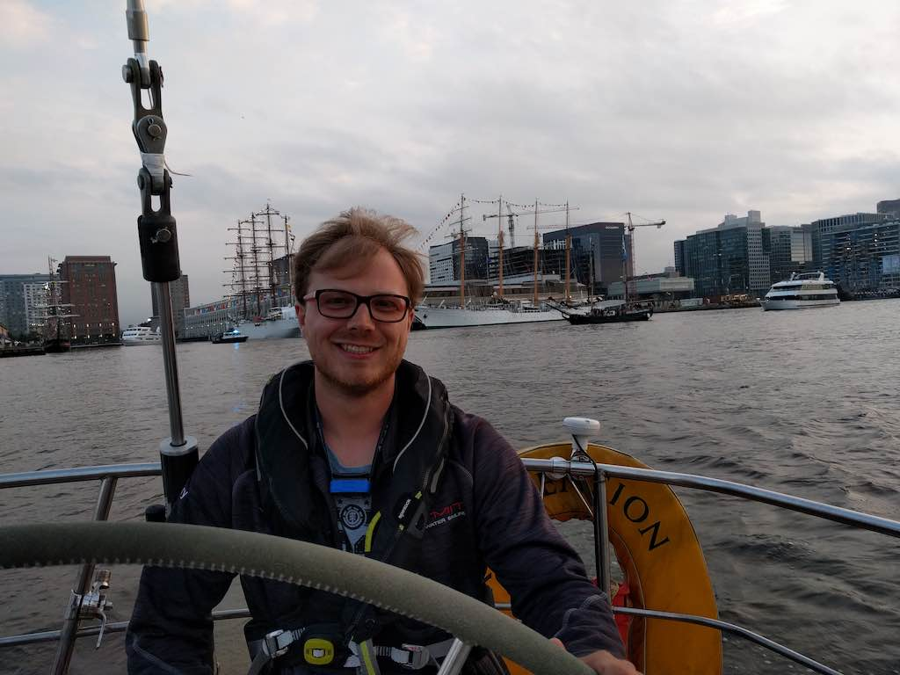
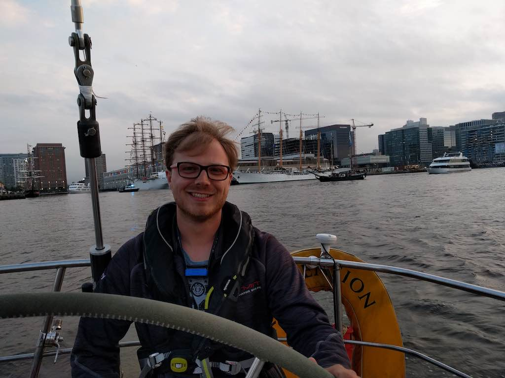

About me
I was born in Paris before moving to Germany in Dusseldorf, then Frankfurt during my childhood but I spent my formative years in beautiful Bordeaux in the south west of France. I attended Ecole polytechnique in France for undergraduate and initial master work and chose to focus my studies on engineering out of a desire to understand how things work and how they are built. This led me to the sciences and I moved to Los Angeles to pursue a Master's degree at UCLA. My strong interest in interfacial sciences and the diversity of topics they cover brought me to Boston and MIT for my Ph.D.
My work allowed me to explore interests in energy storage, surface functionalization for anti-fouling and anti-adsorption purposes with applications to membranes and industrial pipes and, more recently, in biological and biomedical applications where interfacial phenomena are omnipresent. Thanks to the great infrastructure offered by UCLA and MIT, I took every opportunity to diversify my skill set and apply it to my research. Along the way, I learned complex imaging techniques (AFM, SEM), the basics of metal working (machining, welding), as well as data science and machine learning.
Outside of the lab, I enjoy sailing in Boston Harbor, Salem sound and beyond. From leisurely cruises on MIT's Buzzard Bay 30 (Mashnee) to competitive inshore and offshore regattas. I also enjoy taking advantage of the weather to go hiking or skiing in New England depending on the season.
 
